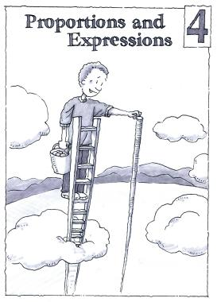

Chapter 4
Proportions and Expressions
Navigation is reserved for this future chapter. Add the chapter source later and these links can become active without changing the textbook structure.
Lessons
- 4 OpeningChapter 4 OpeningFuture unit
- 4.1.1Similar FiguresFuture unit
- 4.1.2Scale DrawingsFuture unit
- 4.2.1Recognizing Proportional RelationshipsFuture unit
- 4.2.2Proportional Relationships with Tables and GraphsFuture unit
- 4.2.3Unit Rate and Proportional EquationsFuture unit
- 4.2.4Connecting Representations of Proportional RelationshipsFuture unit
- 4.3.1Combining Like TermsFuture unit
- 4.3.2Distributive PropertyFuture unit
- 4.3.3Simplifying With ZeroFuture unit
- 4 ClosureChapter 4 ClosureFuture unit